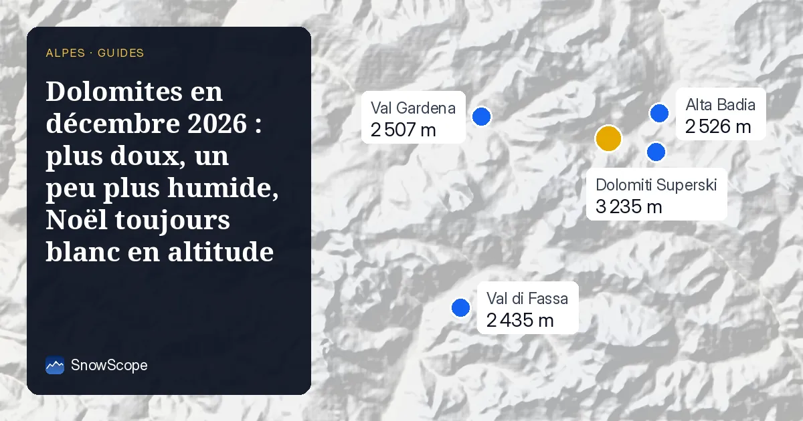
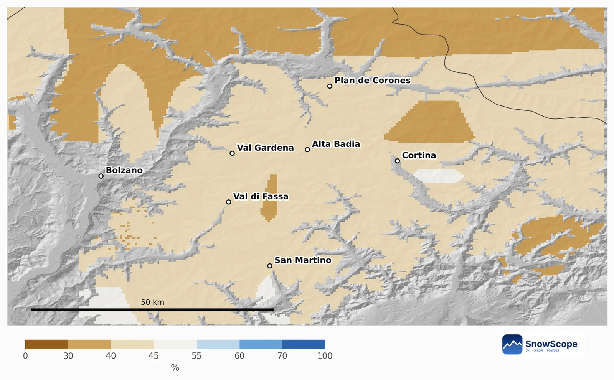

Dolomites en décembre 2026 : plus doux, un peu plus humide, Noël toujours blanc en altitude
Décembre aux Dolomites s'annonce plus chaud et légèrement plus humide que les hivers passés. La carte SnowScope ne montre pas de signal clair sur une grande partie de la chaîne, 42 % penchant vers un manteau moins épais, mais Noël reste très probablement blanc aux altitudes de mi-montagne.
Consultez les prévisions neige en temps réel pour Dolomites sur l'application SnowScopeHauteurs de neige, alertes poudreuse et carte 3D, gratuitement.

La carte des neiges raconte une histoire mitigée
Quand on compare les Dolomites zone par zone avec ses propres décembres passés, le tableau est incertain. Sur la chaîne, 58 % ne montre pas de signal clair dans un sens ou l'autre. Les 42 % restants penchent plutôt vers moins, surtout dans les vallées du Pustertal nord et autour du Cadore au sud-est. Aucune partie de la chaîne ne montre une tendance à plus de neige.
Les chances d'une accumulation de neige fraîche supérieure à la moyenne en décembre restent modestes : entre 34 % et 46 %, avec une valeur médiane de 41 %. En d'autres termes, plus de neige fraîche que d'habitude est possible, mais pas l'issue la plus probable.
Ce qui rend décembre plus chaud
Cinquante et une prévisions saisonnières du centre météorologique européen s'accordent sur le fait que décembre sera environ 1,7 °C plus chaud que le climat de référence des hivers passés. Huit simulations sur dix montrent un réchauffement. Les précipitations se situent 12 % au-dessus d'un total décembriste habituel de 70 mm, mais l'ensemble est divisé : 53 % des simulations sont plus humides.
Aux Dolomites, les grandes chutes de neige surviennent quand les tempêtes poussent du sud. Quand le mois est plus chaud, la limite des neiges monte plus haut, et les précipitations qui auraient pu être de la neige aux altitudes plus basses tombent en pluie à la place. Les altitudes moyennes et hautes reçoivent plus de neige, tandis que les vallées dépendent de plus en plus du manteau artificiel.


Prévisions de neige fraîche et épaisseur en décembre
Sur les principales stations de ski—Val Gardena, Alta Badia, Cortina d'Ampezzo, Val di Fassa et Seiser Alm—un décembre typique apporte 24 cm de neige fraîche à mi-montagne. Cette prévision en annonce 21 cm. Au 31 décembre, l'épaisseur habituelle est de 33 cm ; les perspectives sont de 30 cm. Ces chiffres sont proches de la normale, dans les variations naturelles d'une année à l'autre.
La chance de terminer le mois avec plus de neige que d'habitude s'élève à 41 %. Cela signifie que, bien que des scénarios maigres soient possibles, la prévision ne pointe pas vers un décembre notablement pauvre en neige. Beaucoup dépendra du moment où arrivent les tempêtes et de leur intensité.
Neige le jour de Noël à Val Gardena
Val Gardena à mi-montagne (1 882 m) a connu au moins 5 cm de neige le jour de Noël dans 42 des 45 derniers hivers—une probabilité de 93 %. Cette prévision maintient ce taux élevé : 91 % de l'ensemble saisonnier apporte un Noël blanc. L'épaisseur attendue le 25 décembre est de 25 cm, un peu moins que les 27 cm habituels, mais toujours bien skiable.
Les pentes plus hautes des Dolomites sont encore plus sûrement blanches à Noël. Les fonds de vallées dans un décembre chaud sont les zones incertaines ; ils dépendent généralement de l'entretien et de la neige artificielle.
Comment ce décembre se compare avec les hivers passés
Les décembres passés dont les tendances de prévision ressemblent le plus à ces perspectives sont 2014, 2023 et 2013. Aucun n'a été particulièrement riche ou pauvre en neige ; c'étaient des mois ordinaires avec un cumul et une épaisseur de neige moyens. Cela donne le ton pour la planification : attendez-vous à un décembre dans le milieu de la gamme typique.
Une remarque importe : un seul système tempétueux du sud peut modifier le total du mois de 10 cm ou plus. La prévision à 7 jours sera votre meilleur guide si un système menace ; suivez attentivement le moment et la trajectoire.
Conseils aux skieurs
- Planifiez les journées de début décembre sur les remontées et crêtes plus hautes, où la neige est plus fiable que dans les vallées.
- Consultez la prévision à 7 jours chaque semaine pour rechercher des systèmes tempétueux se déplaçant vers le sud, qui peuvent apporter des chutes de neige importantes aux Dolomites.
- Comparez la carte SnowScope entre différentes vallées : la limite des neiges peut décaler de plusieurs centaines de mètres entre le Pustertal et la Val di Fassa lors d'une période de douceur.
- Si vous avez des plans pour Noël, réservez des terrains de mi et haute montagne en confiance ; les pistes de vallée dépendront davantage de l'entretien.
- Prévoyez des superpositions de vêtements pour la chaleur durant le jour mais attendez-vous à des conditions variables ; une anomalie de 1,7 °C signifie que certaines pistes pourraient porter une croûte de pluie en début de matinée avant de se raffermir.
À propos de ces chiffres
Les hauteurs de neige des stations sont la neige la plus épaisse sur le haut du domaine à la date indiquée ; ce sont des estimations pour une zone, pas une mesure en un point. Les prévisions peuvent changer. Consultez toujours le bulletin d'avalanche officiel avant le hors-piste.
Citer ce bulletin
Pour la recherche, l'enseignement ou la presse : chiffres et graphiques réutilisables librement sous CC BY 4.0 avec cette citation.
SnowScope (2026), Dolomites en décembre 2026 : plus doux, un peu plus humide, Noël toujours blanc en altitude, https://snowscope.app/blog/fr/2026/11/dolomites-december-2026-snow-outlook.html, consulté le 2026-11-10
SnowScope (Atlas Labs). (2026, November 10). Dolomites en décembre 2026 : plus doux, un peu plus humide, Noël toujours blanc en altitude. SnowScope snow reports. https://snowscope.app/blog/fr/2026/11/dolomites-december-2026-snow-outlook.html
BibTeX
@misc{snowscope2026dolomitesdecember2026sno,
author = {{SnowScope (Atlas Labs)}},
title = {Dolomites en décembre 2026 : plus doux, un peu plus humide, Noël toujours blanc en altitude},
year = {2026},
month = nov,
howpublished = {\url{https://snowscope.app/blog/fr/2026/11/dolomites-december-2026-snow-outlook.html}},
note = {Published 2026-11-10 12:17 UTC; accessed 2026-11-10}
}· CC BY 4.0 · Méthodes, données et outils →
Suivre Dolomites
Gratuit : un message quand la neige arrive, et la météo chaque matin.
Autres bulletins neige

Quand réserver Courchevel et les 3 Vallées, quel village choisir et où la neige tient, d'après 46 hivers passés.

Cortina d'Ampezzo de trois façons : Tofana, Faloria-Cristallo et Cinque Torri-Lagazuoi, avec 46 hivers de données de neige à trois altitudes.

Bonneval-sur-Arc se situe à 1 794 m dans la haute vallée de l'Arc, fermée par l'Iseran en hiver. L'épaisseur de neige varie de 99 cm en bas à 335 cm au sommet. Données de 46 hivers passés, novembre 2026.